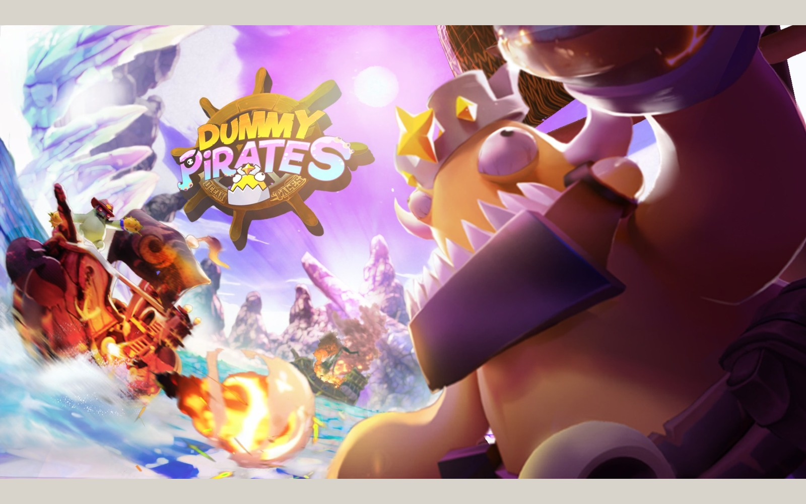

Games & technical art
Dummy Pirates: Ocean Tales
Released PC game / sole 3D artist in a six-person team.
- My role
- Sole 3D artist / game direction
- Team
- Six-person indie team
- Contribution period
- Jan 2022–Jun 2023
- Release
- PC / Steam
PC · Early Access: 1 April 2023 · Full release: 22 November 2024. My role at Good Place Games: January 2022–June 2023.

THE PROJECT
Ships, characters, and environments for a stylized multiplayer game released on Steam.
- MY CONTRIBUTION / FOCUS
- Game Director / 3D Artist · Good Place Games OÜ · Jan 2022–Jun 2023
As the sole 3D artist in a six-person indie team, I created the ships, characters, environments, textures, shaders, and VFX. I also contributed game direction, level design, animation, UI/UX, and production planning. The gallery shows my asset work alongside team gameplay and presentation captures.
Ships and environment in motion
PROCESS & DESIGN
A stylized world across different viewing distances.
The project developed through linked stages: defining the game and its scope, planning maps and abilities, building characters and ships, testing the world in play, and refining the interface and presentation. The working boards show decisions and revisions alongside finished assets.
Design into production
Planning boards connect ship roles, ability ranges, map structure, and player information to the assets needed for a playable build.
Readable factions
Distinct palettes and silhouettes give the ship families an identity across close-ups, selection screens, and gameplay.
Iteration with a team
Roadmaps, feedback boards, and annotated layouts document how the work was broken down and reviewed. Plans are historical development documents, not claims that every proposed feature shipped.
01 / Dummy Pirates: Ocean Tales
Ships & environment
The ship presentation establishes the asset silhouette; the wider view places it in the island setting.
02 / Dummy Pirates: Ocean Tales
Ship modeling & material families
03 / Dummy Pirates: Ocean Tales
Environment kit, topology & effects
Original development screenshots follow the modular environment from graybox and topology to surface treatment, water, and combat effects.
Silent excerpt from the original project animation.
04 / Dummy Pirates: Ocean Tales
Gameplay & character selection
The game camera and selection screen show how the same visual language reads in play.
05 / Dummy Pirates: Ocean Tales
World & effects in context
Gameplay and promotional frames show the combined game production; my responsibilities are described above.
Interface & visual development
Level design & tutorial flow
Development plans and annotated layouts, followed by the player-facing map.
Abilities, roles & feedback
Reference icons inside these working boards are used to communicate design ideas; they are not presented as original icon artwork.
Direction, scope & production planning
Planning boards may include third-party visual references; these are references, not portfolio assets authored by me.
Dummy Pirates: Ocean Tales / IN MOTION
Character in motion.
Short silent preview. Open full recording ↗